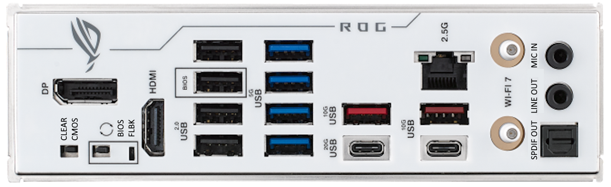
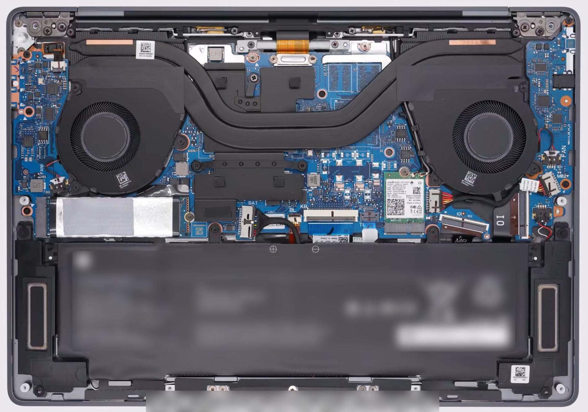
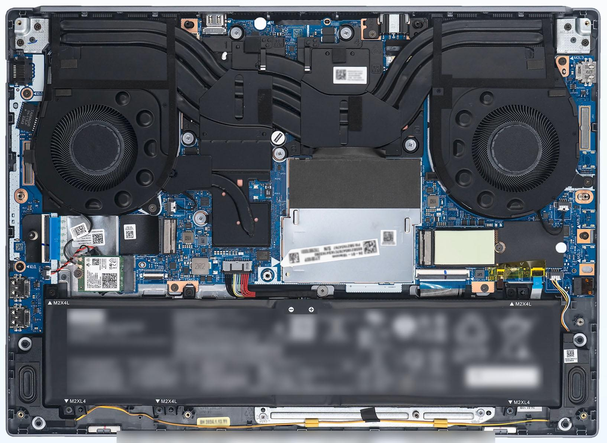
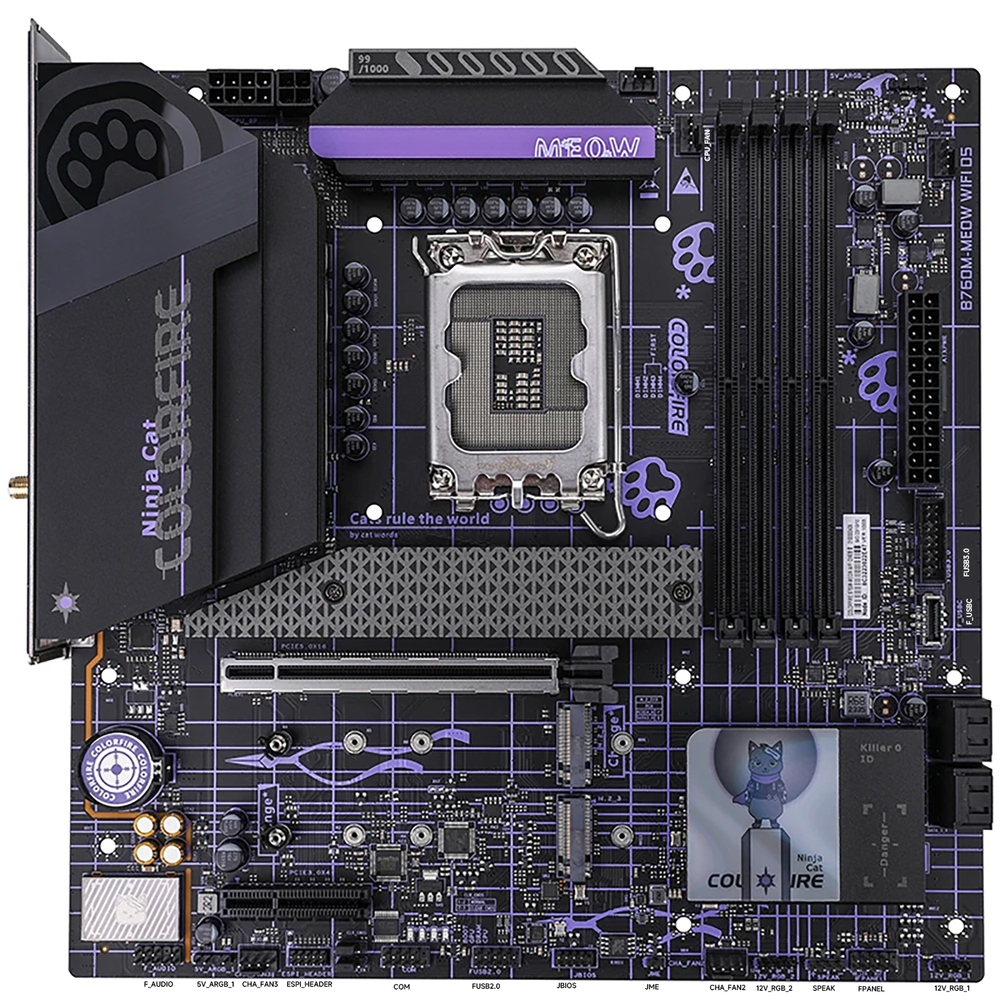
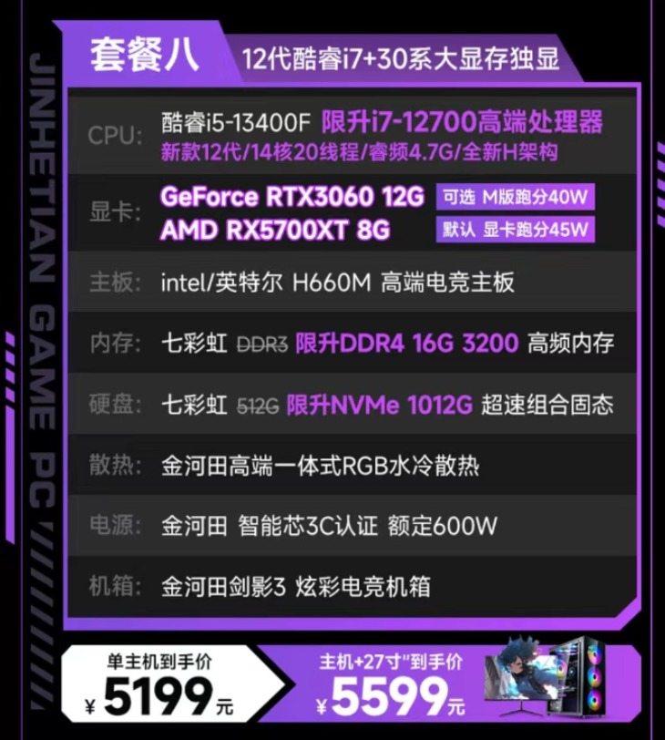
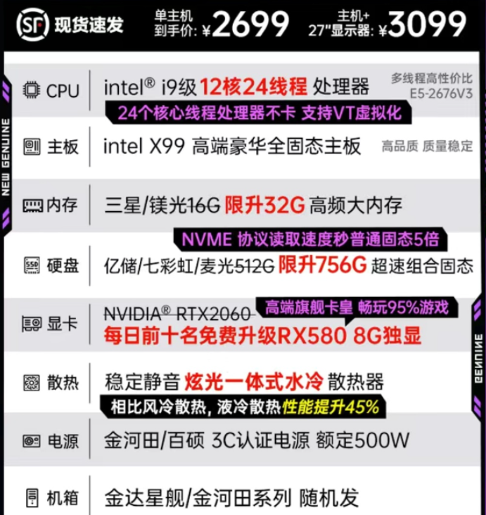
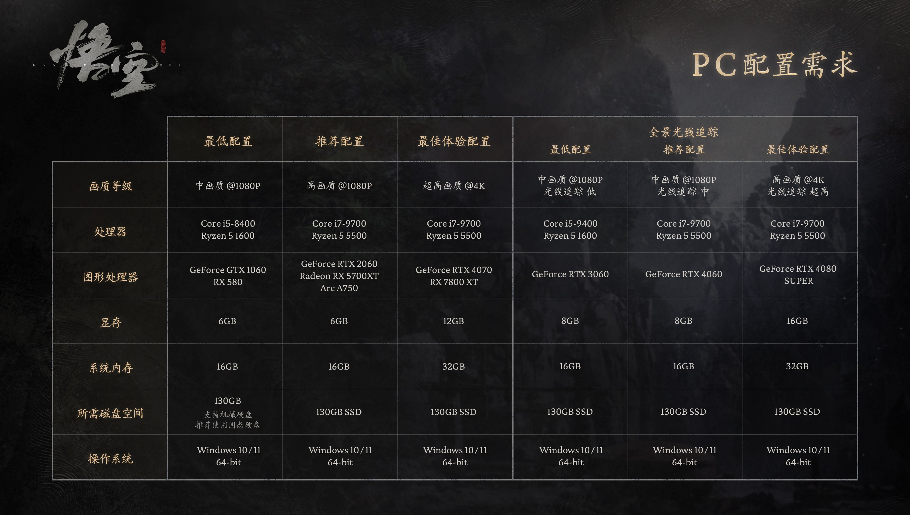
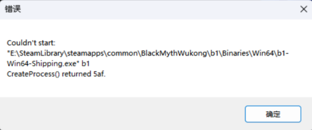
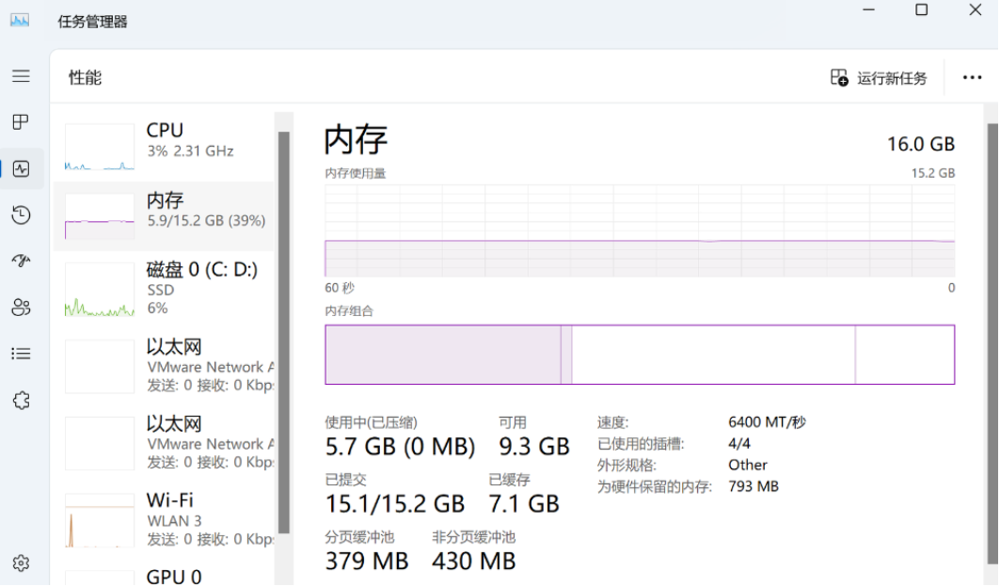
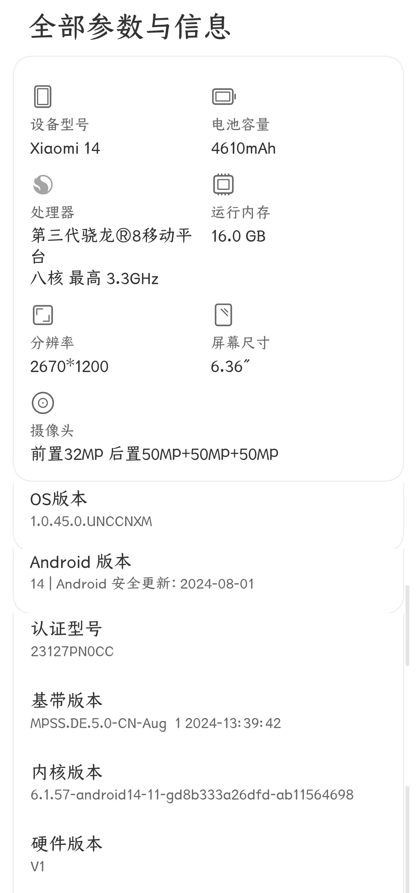

前言
做前须知：
严格保密，不要泄露自己的解题思路和做题过程，从现在开始到加入先锋，竞争已经开始了！
目录
更新速查
| 日期 | 更新内容 |
|---|---|
| 2024.08.31 | 2024 年题目准备完毕 |
| 2024.09.08 | [DEBUG]: 修改推广部面前题题干，增加新的招新海报 |
what is 先锋？ - 官方版
东北大学先锋网络中心成军于 2000 年 9 月，其旗下的先锋网隶属于东北大学团委，在校团委组织宣传部具体指导下协助开展宣传工作。先锋网是融思想政治教育、文化艺术交流、新闻时事报道和青年维权服务于一体的校园门户网站。薪火相传二十余载，凭借新鲜迅速的校园咨询、细致详实的学习资源、丰富多彩的资讯内容广受校内师生好评。
先锋网络中心由主席、副主席、站长、执行站长、各部门部长等主要负责人组成，下设：办公室、网络部、推广部、美工部、硬件部多个部门，各个部门职能明确，共同为先锋网及学校内同学们硬件设备的运行维护保驾护航。
先锋网工作室自成立以来，始终走在高校网络运营的前列，注重人才的发掘与持续性培养，吸纳众多精通程序研发、产品设计、页面设计的优秀互联网人才，为其制定个性化的工作内容，鼓励其提升自身业务水平，为其向职业生涯平稳过渡提供专业的实践平台。先锋网络中心力求成为最具亲和力的校园 Web 开发团队，借鉴知名 IT 企业的企业文化，为成员积极营造轻松、活跃、平等、温馨的团队氛围，在尊重人才、鼓励创新的文化体验中促进成员不断进步、促进团队走向成熟。追求卓越已成为每个先锋人所标榜的工作理念，开拓创新则是先锋人孜孜以求的优良传统。
“我们的工作，就是用最新的 Web 知识充实自己，用最严格的要求审视自己的每一行代码、每一件设计、每一个创意、每一刻青春！”
what is 先锋？ - 实际版
先锋并不是传统的组织，不能用传统的眼光看待她，你会在这里接触到各种？的学长、朋友，从我们的面前题来感受下先锋的魅力吧！（真的吗）
—— 23 级主席团全体成员2024 年特辑
面前题主要为后面的面试做准备，以引导为主，可以选择某一知识点的一道题深入研究一下，并在面试时，分享一下研究心得，不追求全部做完，追求一个研究的过程。
面试时，我们会根据面前题来准备一些小问题，面前题起的是引导学习的作用，同时也给面试提供话题。当然，面试题不做也能参加面试，但是面试时就可能陷入被动，所以大家静下心来好好准备，有所收获才是最重要的！
同时，在这里感谢各位先锋成员对本次招新的帮助，往前可追溯至 13 级学长，主力是 23 级部长团成员，还有 22 级主席团成员的技术支持，爱生活！爱先锋喵！
未完待续
2024 网络部招新七天乐
简介
这是先锋网络部 2024 年的招新试题。
PS：做前提示：不用担心什么都看不懂，做不来，学习本身才是最重要的。
里程碑
注：时间安排均为计划，是暂定的，一切具体时间，以群内通知为准！
时间 内容 2024-09-02 面前题发布 & 开始报名 2024-09-20 [面前题 & 报名] 提交截止 2024-09-21 开始面试 2024-09-28 面试结束 2024-09-30 结果公布 目录
- 1. Git 基础知识
- 2. markdown 写作
- 3. Linux 与 shell
- 4. 计算机相关知识 - 编程语言
- 5. 计算机相关知识 - 计算机网络
- 6. 计算机相关知识 - 数据结构与算法
寄语
题目不难，我们想要的是能够一起学习、一起进步、团结友善的同学，只要你认真学习、做题，大约每个部分花 1 到 2 小时就能完成一些内容。
题目简要说明
我们从今年，首次采用了题目难度分级标注的模式，以
星级数标识，一般情况下，1 星最简单，5 星最复杂。我们在标注难度时，更加看重的是复杂程度，而不是题目的难度（但其实，有时候复杂就会导致难）。难度指标（仅作参考！）：
- 1 星：可以通过搜索引擎 / AI 提问等方式，直接得到类似的答案，且解决步骤较为简单。
- 2 星：有较长的教程，跟着教程来，就能做出来。
- 3 星：要经过自己的学习和研究才能做出来的
- 4 星：必须要有相关知识的储备或者稍微深入的学习才能解决的，或者可能有多个协作的知识点
- 5 星：在 4 星基础上，有一定的开放性
Git 基础知识
本节目录
背景
Git 是一个分布式版本控制系统，用于高效地管理和跟踪代码的变更。它允许开发者在一个团队中协作开发，同时保持代码的版本历史记录，由于 Github 和 Gitee 等开源社区的存在、“开源包围商业”模式的成功，使得 Git 相关知识日渐重要。Git 的基本操作包括克隆仓库、创建分支、提交更改、合并分支等，还有一些高级操作，例如用 Actions 来实现代码的自动化测试等。在这部分，我们希望大家初步学习 git，并完成一些产出。
题目一
⭐️此题希望同学们能够入手 git 系列工具。题目要求如下：
⭐️自行了解 git，在 github/gitee 上，找到自己感兴趣的项目，并成功Star。⭐️下载并安装 Git。⭐️配置个人信息，并保证你能够通过 ssh 进行 git 操作。完成此部分后，请将你的 git 配置信息截图，留在本地，等到面试时进行展示。
加分项： 利用文档，记录你踩过的坑。
（说明：此处的
坑指的是，按照教程进行，但产生了某些教程里没提到的问题，导致你花了额外的时间去处理这些问题）题目二
⭐️⭐️此题需要同学们进行一定的实操。题目要求如下：
⭐️⭐️在 github 上创建一个自己的开源仓库，命名为Hello-Git，并上传一个README.md文件（内容可以为空）。⭐️⭐️将新建的仓库克隆下来，并新建一个命名为 dev 的分支，并添加一个Hello-dev.txt文件，里面要有一首中文五言诗，诗的要求为，“包含我爱先锋的一首五言藏头诗”。⭐️⭐️将 dev 分支推送到你的仓库里，推送信息中，要包含你的学院全称。完成此部分后，请将你的 git 仓库地址截图，留在本地，等到面试时，打开该网站进行展示。
加分项： 利用文档，记录你踩过的坑。
（说明：此处的
坑指的是，按照教程进行，但产生了某些教程里没提到的问题，导致你花了额外的时间去处理这些问题）题目三
⭐️⭐️⭐️
⭐️⭐️⭐️完成了题目二后，直接切换回主分支，并自行发挥，做出一个以后一定会产生合并冲突的操作。⭐️⭐️⭐️将 dev 合并到你的主分支，并解决产生的冲突。- 在 GitHub 中寻找项目解决以下问题：
- 实现开机启动时自动登录校园网并且断连后自动重连
- 学校提供的资源访问控制系统并没有覆盖全部的校园内网服务，请实现使用 webvpn 来访问校园内网的任意网址
完成此部分后，请将你的成果截图，留在本地，等到面试时，进行展示。
加分项： 利用文档，详细记录你解决问题时的操作，可以使用 git diff。
题目四
⭐️⭐️⭐️⭐️⭐️
⭐️⭐️⭐️⭐️⭐️在Hello-Git项目中添加一个index.html文件，内容为“Hello Git!”。使用 Github Pages，将你的Hello-Git项目部署到 Github Pages 上，形成一个简单的网页。完成此部分后，请将你的网站地址记录，并在面试时进行展示。
markdown 写作
本节目录
背景
markdown 是一种轻量级标记语言，它允许人们使用易读易写的纯文本格式编写文档，然后转换成有效的 XHTML（或者 HTML）文档。Markdown 编写的文档可以导出 HTML 格式，也可以导出 PDF 格式，甚至可以导出图片格式。
同时，它的应用也较为广泛，包括但不限于：博客、文档编写、代码注释、邮件编写、微信公众号文章编写、大模型对话等。
所以，本部分我们需要大家简要学一下 markdown。
题目一
⭐️
- 给出
markdown的应用场景的实例，越多越好。- 简要学习
markdown的语法。最后，你要将你的答案，以
markdown的格式，进行保存。到面试时，进行展示。加分项： 将你的答案，推送到在 git 题中，创建的仓库的 dev 或主分支中。
题目二
⭐️⭐️
- 任选一个开源项目，为它重写 README.md 文件，并提交到你的仓库中。
- 较深学习
markdown的语法，尽量掌握数学公式的书写方式。最后，你要将你的答案，以
markdown的格式，进行保存。到面试时，进行展示。加分项： 将你的产出，推送到在 git 题中，创建的仓库的 dev 或主分支中。
题目三
⭐️⭐️⭐️⭐️⭐️
- 搭建 Lenet 并基于 CIFAR10 训练，用 markdown 写下自己学习的过程以及代码说明。
最后，你要将你的答案，以
markdown的格式，进行保存。到面试时，进行展示。加分项： 将你的产出，推送到在 git 题中，创建的仓库的 dev 或主分支中。
题目四
⭐️⭐️⭐️⭐️⭐️“markdown转html用十几行正则就可以搞定，为什么要搞那么复杂？” —— 某乎
⭐️⭐️Markdown, HTML 是什么？有何区别？⭐️⭐️⭐️⭐️⭐️尝试使用正则表达式配合一个编程语言实现能将 Markdown 一部分语法渲染为 HTML 的解释器（备注：一切从简，目的是尝试，感兴趣的推荐先了解一下设计模式）⭐️⭐️⭐️结合你的实践，你认可这个说法吗？给出理由。Linux 与 shell
本节目录
背景
Linux 是一种自由和开放源代码的操作系统，它基于 Unix，并具有强大的功能和灵活性。在 Linux 环境中，你可以使用各种命令行工具和 shell 脚本来自动化任务、管理文件和目录。
在硬件开发、驱动开发、机器人等领域，linux 几乎是绕不开的；在国产硬件、国产操作系统等基础领域，linux 也几乎是绕不开的，甚至华为的鸿蒙系统，最开始也是基于 linux 的。
在本部分，主要要求学习掌握 linux 的一些内容。但其实，最好的老师是熟练，所以，本部分题目不多。
题目一
⭐️⭐️
- 使用任意方式，得到 Linux 终端环境。
- 在你的 Linux 里，准备一些第三方工具。你需要先自己假设你需要干什么，然后安装对应的工具，并说明理由。（例如，想要搞硬件/嵌入式，就可能需要 gdb）
最后，你要将你的答案，进行保存。到面试时，进行展示。
加分项： 将你的产出，推送到在 git 题中，创建的仓库的 dev 或主分支中。
题目二
⭐️⭐️⭐️
⭐️⭐️自行简要学习 shell 脚本语法。⭐️⭐️⭐️编写一个 shell 脚本，实现以下功能：
- 读取一个文件，文件内容为数字，每行一个数字。
- 计算并输出这些数字的总和和平均值。
- 将数字的总和和平均值，输出到一个 json 文件中。
⭐️⭐️⭐️⭐️编写一个 shell 脚本，实现以下功能：
- 编写 shell 脚本，在电脑开机时播放
原神启动！。最后，你要将你的答案，进行保存。到面试时，现场运行并进行展示。
加分项： 将你的产出，推送到在 git 题中，创建的仓库的 dev 或主分支中。
题目三
⭐️⭐️⭐️⭐️⭐️
⭐️⭐️⭐️⭐️⭐️菜鸟喵在同行的压力下，他放弃了开发，转而去当起了体育老师。正好遇上了运动会，有 10000 名学生报名（学生不重名），结果实际上只来了 9990 人，现在你有两份名单，一份是当时报名的学生名单（txt 文件），一份是实际报道的名单，格式均为如下图所示（一行一个名字）。校长因为人没有全齐大发雷霆，这可怎么办呢，好在菜鸟喵是程序员出身的，现在你需要利用你学过的 shell 脚本知识来迅速查出那几个没来的人……经过了好几天激烈的比赛，总算诞生了 1000 名获奖选手，但是却只有他们的名字，而没有照片，为了防止有人冒领，现在你有当时参赛的 10000 名选手的照片，命名格式为“编号+名字.jpg”，还有一个 name.txt 文件，包含获奖选手的姓名，格式同名单，你要利用所学的 shell 知识在所有照片中找到获奖选手的名单，放到一个名为“winners_pic”的文件夹里。
你的任务是：
- 完成第一个 shell 脚本，命名为
data_gen.sh，作用是：
- 生成两个文件，一个名为
name.txt，包含 10000 个不重复的名字，每个名字占一行。- 生成另一个文件，名为
names_attend.txt，包含 9990 个名字，每个名字占一行。这些名字是从name.txt中随机选取的。- 完成第二个 shell 脚本，命名为
find_winners.sh，作用是：
- 读取
name.txt文件，获取获奖选手的名字。- 在所有照片中找到这些获奖选手的照片，并将它们复制到名为
winners_pic的文件夹中。最后，你要将你的答案，进行保存。到面试时，现场运行并进行展示。
加分项： 将你的产出，推送到在 git 题中，创建的仓库的 dev 或主分支中。
题目四
⭐️⭐️⭐️⭐️⭐️
⭐️⭐️⭐️⭐️⭐️小 G 同学的服务运行在 Ubuntu 系统中，并且登录程序会自动记录每一个登录请求的信息在 log.log 文件下，请你帮他写一个 shell 脚本，定时自动备份（若相较于上次备份，该文件内容没有变化，则不进行本次备份）最后，你要将你的答案，进行保存。到面试时，现场运行并进行展示。
加分项： 将你的产出，推送到在 git 题中，创建的仓库的 dev 或主分支中。
计算机相关知识 - 编程语言
本节目录
背景
编程语言是计算机程序设计的基础，在我看来，编程的思想是一样的，有区别的是表达的方式。而不同的编程语言在我看来，就是不同的表达方式。所以，同学们可以广泛的学习学习编程语言，以便找到适合自己的语言。
本部分，主要从广度来考核。
题目一
⭐️⭐️
⭐️配置编程环境，要求至少 1 种，并写出 helloworld 的代码：
c/cpp：基础、灵活、高效
rust：高效、零成本抽象、内存安全
python：简单、易用、灵活
go：简单、高效、并发
java：简单、易用、面向对象、web 开发极为常用
javascript：简单、易用、可拓展、前端
ArkTS：华为首推，⭐️⭐️
⭐️⭐️简单了解一下，各语言的优缺点，并写出自己的看法。
⭐️⭐️选用任意语言，做一个经典的骰子游戏，规则如下：每个骰子有六面，点数分别为1、2、3、4、5、6。 游戏者在程序开始时输入一个无符号整数，作为产生随机数的种子。 每轮投两次骰子： 第一轮如果和数为7或11则为胜，游戏结束； 和数为2、3或12则为负，游戏结束； 和数为其它值则将此值作为自己的点数，继续第二轮、第三轮... 直到某轮的和数等于点数则取胜，若在此前出现和数为7则为负。最后，你要将你的计算机带到面试处，进行展示。
加分项： 将你的学习流程、踩的坑，记录为 markdown 文档保存。
题目二
⭐️⭐️⭐️⭐️
⭐️⭐️⭐️菜鸟喵的免费培训班终于开张了，在经过一段时间的学习后，渣渣喵也大致掌握了编程的基本知识和能力。菜鸟喵想要验收一下这段时间的教学成果，于是给大家发布了一个任务：用任意编程语言做一个程序，能够用来管理学生信息，包括添加，删除，排序，保存，查看等功能，学生信息有：名字，年龄，性别，学号，爱好，绩点等。（提示：可以尝试用 C 语言的结构体和链表，或者用 Python 的列表等）（保存指的是以文件形式保存）⭐️⭐️⭐️⭐️对于某些语言(类似 C/Cpp)，它们的编译过程可以是很复杂的，所以，在这里你需要详细地学习一下，C 语言的编译过程，编译器可以选用 gcc，当然也可以是 clang 等。最后，你需要进行表述。最后，你要将你的答案，进行保存。到面试时，进行展示。
加分项： 将你的产出，推送到在 git 题中，创建的仓库的 dev 或主分支中。
计算机相关知识 - 计算机网络
本节目录
背景
计算机网络作为计算机科学领域的基础学科，是非常重要的。特别是随着人工智能、大数据、云计算等技术的迅猛发展，大模型的训练和应用日益成为热点话题，这使得算力问题愈发凸显。
一方面，大模型的训练需要极高的计算资源，单一设备的算力往往难以满足需求。因此，分布式计算成为了解决这一问题的关键。通过将计算任务分散到多个节点上，分布式计算不仅提高了计算效率，还降低了成本，使得大模型的训练和应用成为可能。在这个过程中，计算机网络扮演着至关重要的角色，它为分布式计算提供了数据传输和资源共享的通道。
所以，本部分我们主要需要大家学习一下计算机网络的相关知识，为后续的内容打基础。
题目一
⭐️⭐️
⭐️⭐️掌握一些基础知识，比如七层模型、五层模型等。⭐️⭐️对比 HTTP 协议与 HTTPS 协议。⭐️⭐️⭐️区分辨别socket和websocket。⭐️⭐️假如你拥有一个域名和 Web 服务器，你该如何做来让你的好朋友能在互联网通过域名访问你的 Web 服务器？最后，你要将你的答案记录为文档进行保存。到面试时，进行展示。
加分项： 将你的产出，推送到在 git 题中，创建的仓库的 dev 或主分支中。
题目二
⭐️⭐️⭐️小王的老师让他去在Google scholar上搜索一篇资料
但是他经过尝试，无论用手机还是电脑都无法打开这个网站。
小强告诉小王，他有一个"盗版网站"跟那个 Google scholar 的功能是一样的，也能搜索到资料。小王试了一下，发现确实可以用。不过小王有些疑惑：
① 当他打开这个替代网站时，我的电脑、网络传输传输过程以及远程的服务器等相关的设备上都发生了什么？
② 而最开始的打不开Google Scholar，问题出现在哪些步骤？
提示：可能涉及到 "长城防火墙"，可以在 github 上搜索到教学/讨论贴。
最后，你要将你的答案记录为文档进行保存。到面试时，进行展示。
加分项： 将你的产出，推送到在 git 题中，创建的仓库的 dev 或主分支中。
题目三
⭐️⭐️⭐️第二天，小王把搜到的资料交给老师后，提到了了自己昨天遇到的事情，并且跟老师说了小强给他的"盗版网站"，老师并没有说什么，只是让小王再去这里帮他再下一个文件。
可是当小王下载的时候发现下载速度非常慢，有的文件甚至无法下载，于是他在网上搜索怎么解决，有人说使用国内的镜像站可以解决。看到镜像站，小王想到昨天那个学术搜索好像也叫什么XX 镜像站。
于是小王开始思考：
- ① 镜像站和原来的网站有什么区别？
- ② 他也想做一个镜像站怎么做？可能需要什么技术或设备？
- ③ 如果让你也去做一个网站，你希望做一个什么样的网站？
最后，你要将你的答案记录为文档进行保存。到面试时，进行展示。
加分项： 将你的产出，推送到在 git 题中，创建的仓库的 dev 或主分支中。
题目四
⭐️⭐️⭐️⭐️某天，小王和在美国留学的表姐润叶聊天时提到了这些问题，润叶说她那访问这些网站、下载文件都没有问题，还说你以后有问题的话她可以帮忙
为了不麻烦表姐，小王说让她把电脑开着，自己用远程控制软件操作就行：
- ① 你远程控制她的电脑，在她的浏览器输入网址之后,她的电脑打开这个网站。
- ② 打开网站后，你找到了你需要的资料，并且下载到她的电脑上了，之后你用 WeChat 将你需要的资料发回来了。
过了几天，小强告诉小王有一个软件可以帮助小王打开无法打开的网站,同时还可以加速下载有些文件的速度。你打开看了看，里面有一个http 代理。
这个东西是干什么的？以及它的实现原理又分为哪几步？
你联想到前几天操控表姐的电脑的过程，感觉其中似乎有哪些步骤非常相似，请指出两处。
最后，你要将你的答案记录为文档进行保存。到面试时，进行展示。
加分项： 将你的产出，推送到在 git 题中，创建的仓库的 dev 或主分支中。
题目五
⭐️⭐️⭐️⭐️小 G 同学刚刚学完 HTTP 协议，写了一个登陆系统的接口，他偷懒地直接使用 GET 请求来处理登录的数据，被大 P 同学得知后教训了一顿，并且大 P 同学还发现这个登录系统能被简单而致命的 SQL 注入 攻击直接绕过登录验证… 登陆数据发送至：116.198.235.185:721
据悉，小 G 同学的代码有一部分是这样写的：
-- Retrieve the username and password parameters [From GET] SELECT * FROM users WHERE username='{username}' AND password='{password}';
⭐️⭐️⭐️⭐️根据题目信息尝试通过漏洞登录小 G 同学的后台，接收服务器返回的信息，注意：请在提交的请求信息内包含你的学号用于记录你的尝试(只需绕过登录即可，请不要进行其他的操作，是无效的)⭐️⭐️⭐️⭐️请诊断小 G 同学这些操作中不安全，不合理的部分，并且提出修改建议最后，你要将你的答案记录为文档进行保存。到面试时，进行展示。
加分项： 将你的产出，推送到在 git 题中，创建的仓库的 dev 或主分支中。
计算机相关知识 - 数据结构与算法
本节目录
背景
题目一
⭐️⭐️⭐️“哇数学可真是太难了，我刚学完分数化简，可是看到：
1428571 / 2857142这种分式就头大，还好大佬教了我怎么做，只要用约分就好了！把分子分母相同的数字全部约掉，也就是把分母的 857142 和分子的 428571 划掉，数学，真是奇妙呢！”补充说明：分子分母只要是相同数字即可一对一划掉，若存在一对多情况，从后往前消除（如题中所给例子分母只有一个 1，相对应分子消除的 1 为最后一位个位数上的 1）
⭐️⭐️⭐️尝试写一个程序得到足够多个这样的大分式（不需要完全正确，但你应该理解自己所写的程序是如何运作的，并有足够清晰的注释）最后，你要将你的答案保存。到面试时，现场运行进行展示。
加分项： 将你的产出，推送到在 git 题中，创建的仓库的 dev 或主分支中。
题目二
⭐️⭐️⭐️⭐️你有足够多的1分，2分，5分硬币，想要凑出n元钱(n为正整数)，有多少种方法？ input : n output : 不同方法的个数
⭐️了解算法的概念，了解如何评估算法的效率⭐️⭐️⭐️用递归或循环来实现求解这个问题⭐️⭐️⭐️⭐️用其他方法解决这个问题，并分析时间复杂度和空间复杂度最后，你要将你的答案保存。到面试时，现场运行进行展示。
加分项： 将你的产出，推送到在 git 题中，创建的仓库的 dev 或主分支中。
题目三
⭐️⭐️⭐️⭐️菜鸟喵的故事很快传开来了，渣渣喵也很惊讶，居然有这么厉害的体育老师，能解决这样复杂的程序。想到他的程序员梦想，渣渣喵决定向菜鸟喵请教。看着这个稚气的青年，菜鸟喵决定先给他出一道题，看看他的底子如何。
为了帮助一窍不通渣渣喵赢得菜鸟喵的好感，现在你需要用任意编程语言解决以下问题：
10 只猴子摘了一堆桃，本来想平分，但是总架不住有贪心的猴……
晚上，1 号猴偷偷起来，先吃了 1 个解解馋，再拿走了剩下的一半藏起来，干完这一切后就心满意足地回去睡觉了；然后 2 号猴又偷偷爬起了，做了和 1 号猴一样的事，随后每只猴都做了一样的事……
⭐️⭐️直到 10 号猴起来的时候发现只剩 2 个了。请问原本有几个桃？
⭐️⭐️⭐️如果题目改为，100 号猴起来时，发现剩下 2 个，那么原本有多少个桃？input : n -> 第n号猴 : m -> 剩下m个桃子 output : 原本桃子的个数最后，你要将你的答案保存。到面试时，现场运行进行展示。
加分项： 将你的产出，推送到在 git 题中，创建的仓库的 dev 或主分支中。
题目四
⭐️⭐️⭐️⭐️渣渣喵很高兴地交上了作业，希望得到一番夸赞，谁知菜鸟喵只是简单地说了一句:"还不错嘛，那这道题怎么样?"渣渣喵懵了。请用任意编程语言设计一个程序，能够输入两个 99 位的数字，并输出它们相乘的结果。现在你还能应对自如吗?
input : n -> 99，代表位数 : x -> 第一个 n 位的数字 : y -> 第二个 n 位的数字 output : 相乘结果最后，你要将你的答案保存。到面试时，现场运行进行展示。
加分项： 将你的产出，推送到在 git 题中，创建的仓库的 dev 或主分支中。
2024 硬件部招新面前题
简介
这是先锋硬件部 2024 年的招新试题。
PS：做前提示：不用担心什么都看不懂，做不来，学习本身才是最重要的。目录
- 主板及其接口
- 操作系统的安装与维护
- 台式机硬件配置及组装
- 其他可能遇见的问题
- 超难附加题
寄语
题目简要说明
我们从今年，首次采用了题目难度分级标注的模式，以
星级 数标识，一般情况下，1 星最简单，5 星最复杂。我们在标注难度时，更加看重的是复杂程度，而不是题目的难度（但其实，有时候复杂就会导致难）。难度指标（仅作参考！ ）：
1 星：可以通过搜索引擎 / AI 提问等方式，直接得到类似的答案，且解决步骤较为简单。
2 星：有较长的教程，跟着教程来，就能做出来。
3 星：要经过自己的学习和研究才能做出来的
4 星：必须要有相关知识的储备或者稍微深入的学习才能解决的，或者可能有多个协作的知识点
5 星：在 4 星基础上，有一定的开放性
（另外没错这是直接从网络部复制的，手动狗头）
题目开始
一.主板及其接口
在硬件部的日常工作中，会遇到各种各样的电脑，包括笔记本和台式机等，那么就需要你对基础的接口有一定的认识，并且可以从接口的物理特点以及走线等推断接口的用处。
1.台式机主板的侧面接口
1.1. 这是某个台式机主板的 IO 接口面板，请指出图中你认识的接口的名字，及他们的用处。
⭐️1.2. 上图中“长方形”的接口为什么接口？在这个接口的家族中，还有什么其他样式的接口？（简述该接口的类型，共可细分为至少七种，并指出这些类型的接口在不同的协议下的区别）
⭐️⭐️⭐️1.3. 兄弟想玩《黑神话：悟空》，但是电脑的硬盘空间不够了，于是兄弟翻出了多年前火车站买的特价 16T 高速硬盘盒，并随便找了根线，请回答下面问题
(1). 下图中的标识可能出现在该接口的附近及其线缆上，请指出他们的区别？理论支持的最大速率是多少？有什么特殊功能？
⭐️⭐️⭐️⭐️(2). 左图中硬盘盒出现的接口为什么接口？用右图的数据线连接，硬盘盒能不能正常运转？如果能用，又会与原装数据线有什么区别？
⭐️⭐️⭐️⭐️(3). 最终兄弟发现硬盘盒是假的，请你告诉兄弟如何鉴别真假硬盘盒
⭐️⭐️⭐️2.笔记本主板
2.1. 以下两张图片是两款笔记本的拆机图，请指出其中你认识的部件
⭐️⭐️⭐️

2.2. 请简述清灰换硅脂，换固态硬盘，内存条的操作方法，并指出哪些步骤值得注意
⭐️⭐️⭐️3.台式机主板
3.1. 这是某个台式机主板的图片，请试着指出其中你认识的接口，及能连接什么设备
⭐️⭐️⭐️⭐️⭐️3.2. 在上图主板中，一共有几条内存条插槽？当我们插内存条的时候，应注意哪些规则？
⭐️为什么？⭐️⭐️⭐️二.操作系统的安装与维护
硬件部工作中，对于系统的安装与维护也是重要的内容，经常性的重装系统也让“重装解决 99%的问题”从玩笑话变成真理(bushi
1.操作系统的安装
1.1. 你认识“PE 系统”吗，请简述它的作用。
⭐️1.2. 请尝试制作一个 PE 系统启动 U 盘，并在借助或不借助 PE 系统的条件下部署和激活 Windows 11 操作系统。
⭐️⭐️1.3. 请在借助或不借助 PE 系统的条件下部署任一 Linux 发行版
⭐️⭐️~⭐️⭐️⭐️⭐️2.操作系统的维护
2.1. 请在借助或不借助 PE 系统的条件下：
- 进行空磁盘分区
⭐️⭐️- 有数据磁盘分区
⭐️⭐️⭐️- 磁盘对拷
⭐️⭐️⭐️2.2. 请尝试在全新的 Windows 11 系统中安装以下内容：
- 微信等常用软件
⭐️- Microsoft Office 等常用专业软件及其激活(如有必要)
⭐️⭐️- Steam 等非国区但常用软件
⭐️⭐️- 显卡、网卡等硬件驱动
⭐️⭐️- Adobe 系列、Solidworks 等硬核专业软件
⭐️⭐️⭐️- 无官网的软件
⭐️⭐️⭐️2.3. 万恶的 P2P 下载器
你知道什么是"P2P 下载器"吗？它有什么坏处？
⭐️在安装软件时该如何辨别？
⭐️⭐️应该怎样避开它？
⭐️⭐️⭐️2.4. BIOS 是什么？
⭐️它都能用来做些什么？
⭐️我们该如何更新它？(提示：可参考之前某道题中的内容)
⭐️⭐️⭐️3.硬件的测试与维护
3.1. 你知道哪些硬件测试程序？
⭐️他们都能用来做什么？
⭐️⭐️⭐️⭐️3.2. “烤机”指什么？
⭐️“双烤”中的“双”是什么？
⭐️应该使用什么工具？
⭐️⭐️3.3. 大家常说的硬盘“0E”是什么意思？
⭐️应该用什么工具测试？
⭐️⭐️三、台式机硬件配置及组装
3.1.警惕台式机整机骗局
⭐️⭐️⭐️兄弟终于开学了！开学前兄弟要买台新电脑了，兄弟想买个超 NB 的 i9 电脑，但是怕拿不准于是给你发了几张截图，请帮兄弟指明白这些电脑的坑都在什么地方？


3.2.网购电脑开箱检查
⭐️⭐️兄弟很听劝，并没有买上述的那些电脑，反手买了天选 5pro 锐龙版 2023，但也因为上面的那些骗局，第一次这么大金额的网购也使兄弟有些焦虑，怕再被坑到，你能教教兄弟如何正确查验开箱网购到的笔记本电脑吗？
3.3.组装整机
兄弟想玩《黑神话：悟空》，但手里只有 1000 块。扣去买游戏花的 268 块钱，你便帮兄弟用剩下的钱配一套能玩《黑神话：悟空》的机器罢。兄弟家有电视当显示器，但是还需要买外设，机器的寿命不做要求，只要能帮助兄弟玩个百八小时就行，剩下的钱自己买饮料喝。
⭐️⭐️⭐️⭐️⭐️
要求：能正常启动进入系统；至少能以 1080p 30 帧运行《黑神话：悟空》；鼓励尽量省预算、提高性能或者增加硬件稳定性。
提示：以下是《黑神话：悟空》官方最低配置 
兄弟看配置需求的时候注意到推荐使用固态硬盘，兄弟对此很好奇，想知道固态硬盘到底比机械硬盘快在哪里？
⭐️⭐️⭐️四.其他可能遇见的问题
1.
⭐️⭐️⭐️⭐️兄弟历经九九八十一难，终于安装好了《黑神话：悟空》，他迫不及待得点击开始游戏，弹出的窗口却让他心头一凉：

这是怎么回事呢？兄弟赶紧百度了错误信息，在 C*DN 网站上他了解到这是由于内存不足而导致的启动失败，这就好办了！只见他打开任务管理器，想找找是什么妖魔鬼怪抢走了他的内存：

他懵了，这不还剩很多吗！？到底是哪里内存满了呢？
聪明的大学生啊，你能帮他度过这一难关吗？（如果可能的话，可以尝试复现类似的情况）
2.
⭐️⭐️⭐️~⭐️⭐️⭐️⭐️可恶的黑吗喽！！！为什么我家是千兆宽带但是下载速率只有 80MB/s，(兄弟愤怒得挥着手中的金箍棒砸向了电脑，然后将它扔进了垃圾桶里.gif)
作为知识渊博的大学生，请你帮兄弟解决这个问题吧
问：GB，GiB，MB/s，Mbps，Mhz，MT/s 的区别。
3.请简述你知道的文件系统，并说出他们的特点和区别
⭐️⭐️⭐️⭐️五、超难附加题
1.
⭐️⭐️⭐️⭐️⭐️这里有一台 Xiaomi 14，它的信息如图：

还有一台 Redmi K60，它的信息如图：
假如你是一名极客玩家，要对上述两部手机进行 root，请简述：
- 你觉得还需要什么信息才能开始 root？
- 你应该如何 root 这部手机？
- 在进行 root 时应该注意些什么？
- 可能出现哪些情况？应该如何修正/避免？
2.
⭐️⭐️⭐️⭐️⭐️学习了解 cpu，gpu，手机 soc 厂商，型号及其类似迭代规律，并发表你个人对他们的看法。
3.
⭐️⭐️⭐️⭐️⭐️假如你需要为一台设计用于大规模数据处理的工作站配置 NVMe SSD 存储系统，要求兼顾速度和可靠性。请回答以下问题：
1. 在主板选择上，如何确保主板能够支持多块 NVMe SSD 的高速读写？请说明相关的技术要求和主板特性（如 M.2 插槽数量、PCIe 通道分配等）。
2. 如果你计划使用四块 NVMe SSD 进行 RAID 0 配置以最大化读写速度，解释这样做的优缺点，并提供可能出现的数据安全风险管理方案。
3. 系统安装完成后，如何优化操作系统（例如 Windows 或 Linux）以充分利用 NVMe SSD 的性能？请列举具体的优化措施（如驱动更新、BIOS 设置、系统文件分配等）。
限制条件：
- 主板选择仅限于支持四个及以上 M.2 插槽的型号，并要求解释 PCIe 4.0 或更高版本对于 NVMe SSD 性能的影响。
- RAID 配置仅限于 RAID 0，不能讨论 RAID 1 或其他 RAID 级别，并要求解释在这种配置下如何应对单块 SSD 故障。
- 操作系统优化要求提供至少三项具体的设置或调整，包括但不限于 BIOS 的修改、驱动安装、文件系统优化。
4.
⭐️⭐️⭐️⭐️⭐️假设你正在为一台企业服务器配置 RAID 5 阵列，服务器内包含五块容量为 2TB 的 SATA 硬盘。现有如下任务：
1. 请计算 RAID 5 阵列的总可用存储容量，并解释 RAID 5 的工作原理，特别是它如何通过奇偶校验提供容错能力。
2. 在一个硬盘发生故障后，解释详细的故障处理流程，包括如何确定故障硬盘以及更换硬盘的具体步骤。
3. 假设有两块硬盘同时出现故障，在不考虑备份的情况下，说明该情况下的数据恢复难度及可能的解决方案。
限制条件：
- 回答时请假设 RAID 控制器支持在线热插拔，且使用的是标准的 SATA 硬盘接口。
- 数据恢复部分要求详细说明可能使用的软件工具（如 TestDisk、R-Studio 等）和恢复的过程，包括磁盘镜像、RAID 结构重建等步骤。
- 请不要回答 RAID 6 或其他 RAID 级别的内容，聚焦在 RAID 5 的特点和故障处理。
5.
⭐️⭐️⭐️⭐️⭐️小 C 最近为自己组装了一台高性能电脑，具体配置如下：
硬件组件 具体型号 主板 ASUS ROG Strix Z390-E CPU Intel Core i7-9700K (ES3 版) 显卡 NVIDIA GeForce RTX 2080 Ti 内存 G.Skill 16GB DDR4 3200MHz 硬盘 Samsung 970 EVO 1TB NVMe SSD 电源 Corsair RM850x 850W 金牌电源 散热器 Noctua NH-D15 小 C 对这台电脑的性能非常期待，然而在实际使用中，他遇到了一系列棘手的问题。具体表现为：电脑在运行时出现随机重启、蓝屏死机，并且系统经常不稳定。小 C 尝试排查问题，先后更换了显卡、内存，重新安装了操作系统，但问题仍然没有得到解决。经过排查，他怀疑问题可能出在 CPU 上。小 C 使用的是 Intel Core i7-9700K 的工程样品（ES3 版），这种处理器在特定条件下可能会表现出不稳定性。
现在，小 C 决定进一步深入分析这个问题，并希望通过技术手段找到解决方案。
小问 1：查阅资料并选择最有可能的解决方案
小 C 已经排除了显卡和内存问题，决定进一步查阅资料，找到导致系统不稳定的最有可能原因。以下哪些因素最有可能导致小 C 的系统不稳定？请从以下选项中选择一个最有可能的原因：
A. 显卡驱动不兼容 B. 主板 BIOS 版本过低 C. 内存频率过高 D. 电源供电不足 E. NVMe SSD 接口问题
小问 2：填空题
小 C 决定进一步调整 BIOS 设置，希望通过调整 CPU 相关设置来提高系统稳定性。请填空回答以下问题：
在 BIOS 中，调整与 CPU 相关的设置时，__选项的调整可能会改善 CPU 的稳定性。建议将电压设置为__（具体值），这样可以确保系统在高负载下运行时更稳定。
小问 3：简答题
在进一步分析后，小 C 怀疑问题可能与主板与 ES3 版 CPU 的兼容性有关。请结合主板 BIOS 版本更新、电源管理、系统优化、散热等方面进行详细分析，并提出一个具体的技术方案来解决这个问题。要求方案涵盖从硬件调试到系统设置的各个步骤，并充分考虑到工程样品处理器的特殊性。
2024 基础事务部招新面前题
各部门简介
部门 职责 预计活动 办公室 负责报销、日常活动管理、人员统筹等 培训、制定计划 推广部 负责对先锋的活动进行宣传、策划等 招新、先锋之夜策划、先锋大讲堂资料整理 美工部 负责制作先锋组织内所需要的各种图标 培训、图标设计 目录
时间表（暂定）
注：时间安排均为计划，是暂定的，一切具体时间，以群内通知为准！
时间 内容 2024-09-02 面前题发布 & 开始报名 2024-09-20 [面前题 & 报名] 提交截止 2024-09-21 开始面试 2024-09-28 面试结束 2024-09-30 结果公布 浑南办公室面前题
Word 选择题
基础操作
题目： 在 Word 中，如何快速打开一个已有的文档？
- A. 点击“文件”菜单，选择“新建”
- B. 点击“文件”菜单，选择“打开”，然后浏览到文档所在位置并选择它
- C. 在 Word 启动界面上，直接点击最近打开的文件列表中的文件名
- D. 以上都可以
文本格式设置
题目： 要更改 Word 文档中某段文字的字体大小，应如何操作？
- A. 选中文字，点击“开始”选项卡中的“字体”下拉列表，选择字体大小
- B. 选中文字，右键点击，选择“字体”，在“字体”对话框中设置大小
- C. 选中文字，直接在文档上方的字号下拉列表中选择大小
- D. 以上都可以
段落与页面设置
题目： 在 Word 中，如何设置页面的边距？
- A. 点击“视图”选项卡，选择“页面布局”
- B. 点击“布局”或“页面布局”选项卡（取决于 Word 版本），在“页面设置”组中点击“边距”按钮，选择合适的边距或自定义边距
- C. 右键点击页面中的任意位置，选择“页面设置”
- D. 以上都不对
插入与编辑图片
题目： 在 Word 文档中插入一张图片后，如何调整图片的大小和位置？
- A. 选中图片，使用鼠标拖动图片边框调整大小，点击并拖动图片以移动位置
- B. 选中图片，点击“图片工具”下的“格式”选项卡，使用“大小”组中的工具调整大小，使用“排列”组中的工具调整位置
- C. 只能通过“图片工具”下的“格式”选项卡来调整图片大小和位置
- D. A 和 B 都是正确的方法
高级格式与样式
题目： 在 Word 中，如何快速应用预定义的样式（如标题 1、标题 2 等）到文本中？
- A. 选中文本，然后在“开始”选项卡中的“样式”组中选择合适的样式
- B. 必须先定义一个新的样式，然后才能应用到文本中
- C. Word 不支持快速应用预定义样式，只能手动设置格式
- D. 以上都不对
Excel 选择题
基础操作
题目： 在 Excel 中，要输入当前日期，可以按下哪个快捷键？
- A. Ctrl + N
- B. Ctrl + D
- C. Ctrl + ; (分号)
- D. Ctrl + Shift + ; (分号)
公式与函数
题目： 假设 A1 单元格包含数字 10，B1 单元格包含数字 20，在 C1 单元格中想要显示这两个数字的和，但只保留一位小数，应该使用哪个公式？
- A. =ROUND(A1+B1, 1)
- B. =SUM(A1:B1, 1)
- C. =ROUNDUP(A1+B1, 1)
- D. =SUM(A1+B1) 并设置单元格格式为一位小数
数据处理与筛选
题目： 在 Excel 中，如果要对数据进行筛选，以仅显示满足特定条件的行，应该使用哪个功能？
- A. 排序
- B. 条件格式
- C. 数据验证
- D. 筛选
图表与可视化
题目： 在 Excel 中，想要根据一组数据创建一个柱状图来展示不同类别的销售额，应该使用哪个选项卡中的功能？
- A. “开始”
- B. “插入”
- C. “数据”
- D. “视图”
PowerPoint 选择题
基础操作
题目： 在 PowerPoint 中，如何添加一个新的幻灯片？
- A. 点击“文件”菜单，选择“新建”
- B. 点击“开始”选项卡中的“新建幻灯片”按钮
- C. 按下 Ctrl + N 快捷键
- D. 点击“视图”选项卡中的“幻灯片母版”
文本与格式
题目： 在 PowerPoint 中，如何更改幻灯片上文本的字体颜色？
- A. 选中文本，然后在“开始”选项卡中的“字体”组选择颜色
- B. 点击“设计”选项卡，选择主题颜色
- C. 右键点击文本，选择“字体”并在弹出的对话框中设置颜色
- D. 以上都可以，但方法 A 最直接
插入元素
题目： 在 PowerPoint 中，想要插入一张图片作为幻灯片的背景，应该如何操作？
- A. 点击“插入”选项卡，选择“图片”，然后将图片插入幻灯片并调整大小以覆盖整个幻灯片
- B. 点击“设计”选项卡，选择“格式背景”，在“填充”选项中选择“图片或纹理填充”，然后浏览并选择图片
- C. 右键点击幻灯片空白处，选择“设置背景格式”，然后进行与 B 选项相同的操作
- D. A 和 B 都是正确的方法，但 B 选项更直接地针对背景设置
动画与过渡
题目： 在 PowerPoint 中，如何为幻灯片上的某个对象添加动画效果，使其在点击时淡入？
- A. 选中对象，点击“动画”选项卡，在“动画”组中选择“淡入”效果
- B. 点击“切换”选项卡，为幻灯片整体添加淡入效果
- C. 右键点击对象，选择“自定义动画”，在弹出的对话框中设置淡入效果
- D. A 和 C 都是正确的方法，但 A 选项在较新版本的 PowerPoint 中更常用
南湖办公室面前题
一、软件的准备
常用软件：Office 或 WPS（Word、Excel、PPT）、福昕（pdf）
（学校官网提供了正版 Office 和福昕的下载。）
Word 的使用
基本元素的编辑：
- 字体：颜色、大小、格式等。
- 段落：行距、对齐方式、项目符号、缩进、间距、换行、分页。
- 页面：页边距、分栏、页码、页眉。
- 边框：段落边框、页面边框和底纹的设置。
- 表格：列宽、行高、对齐方式、拆分、合并等。
Word 的实际问题
将下段文字分段居中并设置为楷体、行距 1.5 倍、标题字号三号、作者和正文字号四号、在作者处添加注释标记。
静夜思 李白
床前明月光，疑是地上霜。
举头望明月，低头思故乡。
以下有一段文字，以此完成 2，3，4 题。
区域 项目 金额 购进日期 办公室 台式电脑主机 6888 2018/5/11 办公室 机械硬盘 239 2018/5/11 办公室 麦克风 1699 2018/3/14 办公室 显示屏 2099 2018/3/7 前台 智能人脸识别考勤机 1099 2018/2/25 办公室 笔记本电脑 3699 2018/1/16 办公室 USB 网线转换器 69 2018/1/12 办公室 图形工作站主机 7888 2018/1/10 会议室 打印机 2100 2018/1/7 餐厅 微波炉 1599 2018/1/7
- 为上段文字添加编号，并且将区域/项目/金额分别设置为蓝/绿/红色。
- 将题 2 中处理后的文字以表格形式呈现（第一列加上编号）。
- 将题 3 表格中所有“办公室”替换为“工作区”。将所有的日期改为 XXXX.XX.XX 形式。
- 使用“替换功能”批量删除图片。
二、Excel 的实际问题
在第一列输入以下文字，并在第二列单独输入“@”符号前的文字。
原始数据 Laura.Giussani@ABC.com Anne.HL@ABC.com Alexander.David@ABC.com Kim.Shane@ABC.com Manish.Chopra@ABC.com Gerwald.Oberleitner@ABC.com 以下有一些日期，以此完成 2，3 题。
原始数据 2001 年 1 月 1 日 2002.2.1 2003/3/3 2004,4,4 20100601 2024 9 1
- 将以下文字导入第一列，并且全部改为 XXXX-XX-XX 形式，示例：2001-01-01。
- 使用“筛选”功能，将题 2 表格中日期为 1 号的选项筛选出来。
- 尝试使用 VLOOKUP 函数对表格中的某个元素进行查找。
- 尝试设置一个高级的数据验证规则以限制输入的日期范围。
推广部招新面前题
第一题
- 标记语言是什么，他的底层逻辑是什么
- 标记语言的种类，他们的区别和联系
- 标记语言和编程语言的区别
- 标记语言和 HTML 的关系
第二题
- markdown 是什么
- markdown 的语法
- markdown 和 html 的兼容性
第三题
- HTML 标记语言，通过这个链接，学习 html 的语法。
- 学习完语法之后尝试对这篇文章进行翻译和重写
第四题
- 用 markdown 写一遍关于 markdown 基本用法的博客并发布到 CSDN 上（要求尽量精细）
<!DOCTYPE html> <html lang="zh-CN"> <head> <meta charset="UTF-8" /> <meta name="viewport" content="width=device-width, initial-scale=1.0" /> <title>HTML基本功能示例</title> <style> /* 简单的CSS样式 */ body { font-family: Arial, sans-serif; } h1 { color: blue; } table, th, td { border: 1px solid black; border-collapse: collapse; } th, td { padding: 10px; text-align: left; } </style> </head> <body> <h1>我的HTML页面</h1> <p>这是一个段落。</p> <h2>无序列表</h2> <ul> <li>列表项 1</li> <li>列表项 2</li> <li>列表项 3</li> </ul> <h2>有序列表</h2> <ol> <li>第一步</li> <li>第二步</li> <li>第三步</li> </ol> <h2>链接</h2> <p>访问<a href="https://www.example.com">示例网站</a>。</p> <h2>图片</h2> <p>以下是一张图片：</p> <img src="https://via.placeholder.com/150" alt="示例图片" /> <h2>表格</h2> <table> <tr> <th>标题 1</th> <th>标题 2</th> <th>标题 3</th> </tr> <tr> <td>单元格 1</td> <td>单元格 2</td> <td>单元格 3</td> </tr> <tr> <td>单元格 4</td> <td>单元格 5</td> <td>单元格 6</td> </tr> </table> <h2>表单</h2> <form action="/submit-form" method="post"> <label for="name">姓名：</label> <input type="text" id="name" name="name" /><br /><br /> <label for="email">电子邮箱：</label> <input type="email" id="email" name="email" /><br /><br /> <input type="submit" value="提交" /> </form> </body> </html>将上面的代码用 markdown 形式表示出来
第五题
- 思考如何用 markdown 等轻量型标记语言，写一个先锋的博客系统，如何去进行内容的整理和阐述，请着重说明你对该博客系统的结构说明(目录结构/资源位置等)
美工部招新面前题
以下命令中可以选择像素的是？
- A) 套索工具
- B) 魔棒工具
- C) 色彩范围
- D) 羽化
以下键盘快捷方式中可以改变图像大小的是？
- A) Ctrl+T
- B) Ctrl+Alt
- C) Ctrl+S
- D) Ctrl+V
在 Photoshop 中可以改变图像色彩的命令是____。
- A) 曲线调整
- B) 颜色分配表
- C) 变化调整
- D) 色彩范围
在编辑一个渐变色彩时，可以被编辑的部分是____。
- A) 前景色
- B) 位置
- C) 色彩
- D) 不透明度
路径工具的作用主要有____。
- A) 改变路径内图像的形状
- B) 在路径中填充色彩
- C) 将路径转为选择区域
- D) 使着色工具沿着路径画线
下列不支持无损压缩的文件格式是？
- A) PNG
- B) JPEG
- C) TIFF
- D) PSD
编辑保存过的 ALPHA 通道的方法是？
- 在快速蒙版上绘画
- B) 在黑、白或灰色的 ALPHA 通道上绘画
- C) 在图层上绘画
- D) 在路径上绘画
使用圆形选框工具时，需配合__键才能绘制出正圆。
- A) SHIFT
- B) CTRL
- C) TAB
- D) 没有按键，Photoshop 不能画正圆
下面的命令中，____可以进行图像色彩调整
- A) 色阶命令
- B) 曲线命令
- C) 变化命令
- D) 模糊命令
用于印刷的 Photoshop 图像文件必须设置为____色彩模式。
- A) RGB
- B) 灰度
- C) CMYK
- D) 黑白位图
在 Photoshop 中，如何使用快捷键选择背景图层?
- A) Ctrl+1
- B) Ctrl+2
- C) Ctrl+A
- D) Ctrl+B
下列哪个工具可用于在图像中创建矩形选区?
- A) 矩形选框工具
- B) 套索工具
- C) 魔术棒工具
- D) 快速选择工具
若要在 Photoshop 中调整图像的色彩和亮度,应使用哪个面板?
- a. 图层面板
- b. 色彩面板
- c. 调整面板
- d. 样式面板
如何使用快捷键取消选区?
- A) Ctrl+Shift+D
- B) Ctrl+D
- C) Ctrl+Shift+M
- D) Ctrl+M
下列哪个滤镜可用于在图像中创建网点效果?
- A) 马赛克滤镜
- B) 浮雕滤镜
- C) 色调分离滤镜
- D) 点状化滤镜分离滤镜
若要水平翻转当前图层，应使用哪个快捷键?
- A) Ctrl+Shift+A
- B) Ctrl+Shift+C
- C) Ctrl+Shift+D
- D) Ctrl+Shift+R
如何使用快捷键在当前图层中添加一个空白图层?
- A) Ctrl+Shift+N
- B) Ctrl+Shift+P
- C) Ctrl+Shift+A
- D) Ctrl+Shift+K
下列哪个工具可用于选择图像中的多个对象?
- A) 移动工具
- B) 选择工具
- C) 裁切工具
- D) 缩放工具
若要在 Photoshop 中调整一个图层的透明度,应使用哪个选项?
- A) 曲线
- B) 色阶
- C) 不透明度
- D) 饱和度
如何使用快捷键在同一图像的不同图层中进行粘贴?
- A) Ctrl + Shift + V
- B) Ctrl + V
- C) Ctrl + Shift + Paste
- D) Ctrl + Paste
属于滤镜可制作的效果。
- A. 线形模糊
- B. 方形模糊
- C. 形状模糊
- D. 圆形模糊
- 当按住 功能键 时，将鼠标移到图层调板中的两层之间的细线处后，单击鼠标就可使两个图层形成裁切组关系。
- A. 【Tab】
- B. 空格
- C. 【Alt】
- D. 【Shift】
同一个图像文件中的所有图层具有相同的 - A. 通道 - B. 其它选项都不对 - C. 分辨率 - D. 路径
下面对“图像尺寸”命令描述正确的是 。
- A. 图像尺寸”命令不可以改变图像的分辨率
- B. 图像尺寸”命令可以改变图像的亮度
- C. 图像尺寸”命令用来改变图像的尺寸
- D. 图像尺寸”命令可以将图像放大，而图像的清晰程度不受任何影响
- 一个 RGB 模式的彩色图像包括通道数是 个。
- A. 1
- B. 3
- C. 4
- D. 2
- 在“曲线”命令对话框中，最右上角的一点 移至右下角。
- A. 不能
- B. 很难判断
- C. 不一定
- D. 能
- 当画面中有选择区域时，按下键盘中的【Alt】键，可 画面中的选择区域。
- A. 反选
- B. 取消
- C. 增加
- D. 减少
- 使用前景色填充选区，可按住 +【Delete】组合功能键实现。
- A. 【Tab】
- B. 【Ctrl】 背景色
- C. 【Shift】
- D. 【Alt】 前景色
- 下面对裁切工具描述正确的是 。
- A. 裁切后的图像分辨率不会改变
- B. 裁切工具可将所选区域裁掉，而保留裁切框以外的区域
- C. 裁切时裁切框不可随意旋转
- D. 要取消裁切操作可按【Ctrl】键
如果一个 100x100 像素的图像被放大到 200x200 像素，文件大小会 。
- A. 大约是原大小的三倍
- B. 不变
- C. 大约是原大小的两倍
- D. 约是原大小的四倍(准确答案)
单选题】下列模式中， 是绘图工具的作用模式，而在层与层之间没有这个模式。
- A. 背后
- B. 叠加
- C. 排除
- D. 溶解
【单选题】下面关于路径的描述正确的是 。
- A. 可将当前选区转换为选区
- B. 利用铅笔工具可创建路径
- C. 不能对路径进行填充
- D. 删除路径后方可建立选区
当需要画一个以鼠标击点为中心的正方形，应按住键盘中的 **键。
- A. 【Shift】+【Tab】
- B. 【Tab】
- C. 【Ctrl】+【Shift】
- D. 【Shift】+【Alt】
【单选题】下列关于分辨率的描述正确的是 。
- A. 网线数的单位是 ppi （lpi）
- B. 图像分辨率的单位是 dpi （ ppi）
- C. 为了满足印刷的需要，网线数与图像分辨率之比通常是 1:2
- D. 输出分辨率的单位是 lpi
【单选题】输出分辨率与图像分辨率的关系是 。
- A. 打印分辨率的单位是 dpi， 而图像分辨率的单位是 ppi
- B. 打印分辨率一定大于图像分辨率
- C. 打印分辨率一定等于图像分辨率
- D. 打印分辨率一定小于图像分辨率
【单选题】下面对魔棒工具描述正确的是 。
- A. 魔棒只能作用于当前图层
- B. 在魔棒选项调板中容差数值越大选择颜色范围也越大
- C. 魔棒常用于复杂背景图片的选择
- D. 在魔棒选项调板中，选择范围是固定无法改变的
单选题】当要确认裁切范围时，需要在裁切框中双击鼠标或按键盘上的 ____键。
- A. 【Enter】
- B. 【Esc】
- C. 【Tab】
- D. 【Shift】
【单选题】选中喷枪工具时，按住【Ctrl】键被切换为 。
- A. 移动工具
- B. 其它选项都不对
- C. 吸管工具
- D. 画笔工具
【单选题】将文字层转换为普通层的方法是 。
- A. 图像”→“调整”→“普通层”
- B. 图层”→“栅格化”→“图层
- C. “图层”→“文字层”→“普通层
- D. “编辑”→“图层”→“普通层”
【单选题】一幅 CMYK 图像，其通道名称分别为 CMYK、青色、洋红、黄色、黑色，当删除黄色通道后通道调板中的各通道名为 。
- A. 青色、洋红、黑色
- B. ~1~2~3
- C. CMYK、青色、洋红、黑色
- D. ~1~2~3~4
2024 年先锋网络中心 招新海报
后记
先锋其实并不是一个特别高大上的组织，每一位同志都有你们可以发挥的一块儿天地，在这里，没有古板的条条框框，有的只是探索时的那一份纯真的情感。
我们不愿意做一个墨守成规的先锋，我们更愿意去做那个“先锋”，一个作为探路者的先锋，一个能为全校同学们提供帮助的先锋。我们的目的很纯真：过来人踩过的坑，希望未来人能在我们的指引下跳过去，而我们一直在这条路上奋斗者。
今年也是先锋20周年，一个十分重要的日子，我们更希望先锋能在你们的引领下，发挥着科普的重任。 重振先锋荣光，不止吾辈，更是你们，我们希望未来的先锋能建设的越来越好。